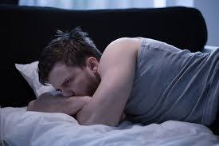
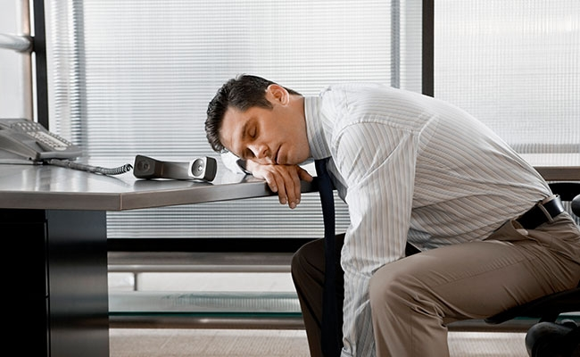
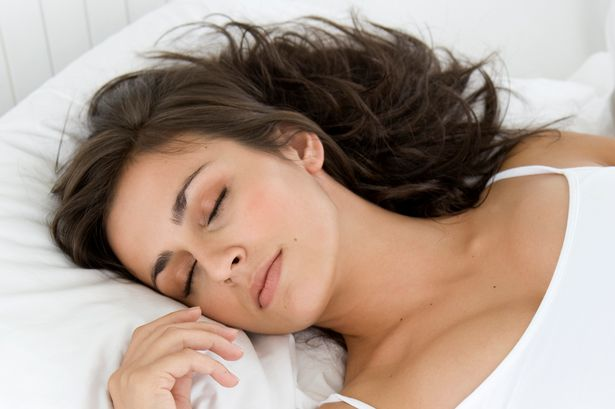

Sleeping is relaxing for the mind, body, and soul. The only reason I like sleeping is because I like to get away from people and the only way I can do that mentally is by sleeping. I can go to sleep almost anywhere when I am tired. Sleeping is one of the most enjoyable things to do during my alone time.
When I sleep I wake up happy and stress free. Even though it is almost impossible for me to go to sleep instantly, it feels good when i get the chance. I try to go to sleep at 12 every night, but i always manage to fall asleep at almost four every night. Althrough there are things that can effect your sleeping.
If you are similar any problems similar to mine, you may have a sleeping disorder called insomnia. Insomnia is when your brain does not let you fall asleep when you need to sleep the most. This disorder is very common in America and can easily be treated by taking a certain medicine so you can fall alseep peacefully and earlier than you normally do. This can be very dangerous because by the time you fall asleep, you may have to get up shortly after you fall asleep.
Click the picture below to learn more about insomnia.

If you are experiencing the oppisite of me, which is when you feel like you sleep a lot longer than you should, then you make be experiencing hypersomnia. Hypersomnia is when you get a lot more sleep than you should be having. If you are a hypersomniac then you may need to go see a doctor to find out if there is any medical treatments for it. But falling asleep at the wrong time can be very dangerous.
Click the picture below to learn more about hypersomnia.
 Montez Caldwell-Gary